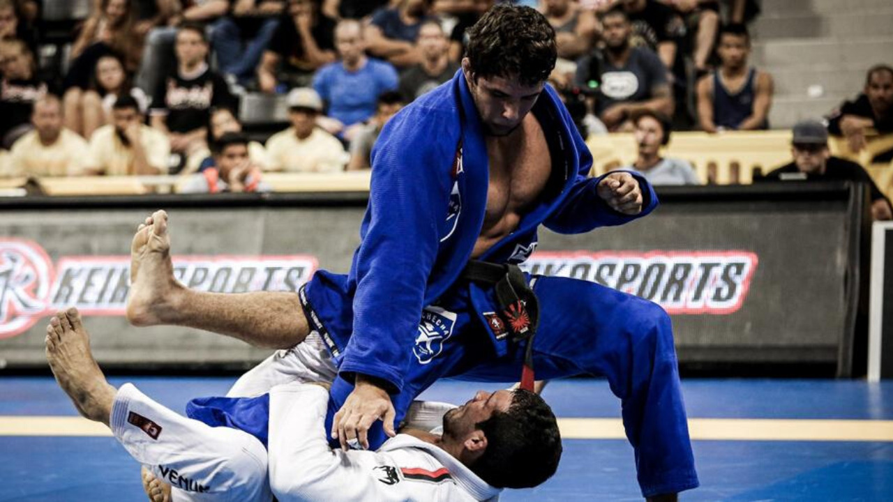

Felipe Eduardo Guzmán Vega
Datos generales
Fecha de nacimiento: 23/12/1998
Cedula: 20.003.705-7
Nacionalidad: Chilena
EMAIL: Felipeguzmanvega5@gmail.com
Direccion: Diputada Laura Rodriguez #7202
Telefono: +56928242610
Edad: 25 Años
Descripcion // introduccion:
Mi objetivo profesional es utilizar mis habilidades organizativas y mi atención al detalle para optimizar los procesos e ir contribuyendo a la empresa y también seguir mejorando mis tanto conocimientos como en el manejo de equipos de sistemas, con el objetivo de poder implementar prácticas innovadoras que impulsan. la productividad, así mismo, buscar oportunidades de crecimiento profesional dentro de la empresa, ya sea a través de la asunción de responsabilidades adicionales o participación en proyectos de mejora continua.
Estudios academicos
escolar: colegio Tobalaba 2000 - 20005
secundaria
superior
experiencia previa
Soldado De Tropa Ejercito de chile
inicio: 2017 - Termino: 2022
bodeguero tienda Ripley
inicio: OCT 2023 - Termino: FBR 2024
Anfotrion Clinica UC CHISTUS
inicio: FRB 2024 - Termino: MAR 2024
Mis hobbies
practicar BJJ BRASILEÑO

ir al GYM
hacer TREKKING